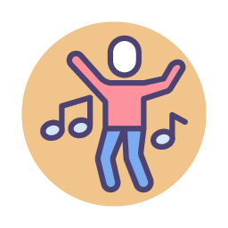
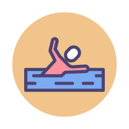

Isabela Silva
SOBRE
Sou centralizada e gosto de estar sempre atualizada nas tendências do mercado. Aplicar soluções práticas aos problemas, solucionando da melhor forma sendo em grupo ou individual. Adoro me comunicar, conhecendo pessoas e locais novos atribuindo e compartilhando conhecimentos. No meu tempo livre, gosto de estar ao lado das pessoas que amo, praticar atividades físicas, principalmente natação, viajar conhecendo novos lugares aos quais posso me aventurar. Hoje sou aluna do projeto REPROGRAMA, apaixonada pelo que faço e desenvolvo no curso, procuro colocar em prática os conhecimentos colhidos ao longo do percurso.pois ser Dev-Front é olhar o próximo com outro olhar, é realizar sonhos e sentir a satisfação e prazer naquilo que foi feito.
Meus Hobbies
O que gosto de fazer
-

Ler
-

Dançar
-

Cuidar de Pets Virtuais
-

Jogos
-

Netflix
-

Praticar Exercicios
-

Natação
-

Viajar